Проблема
Мусор у частных домов вывозят, но жители не знают, когда приедет бригада и приезжала ли она вообще.
россиян называют плохую организацию сбора и вывоза мусора главной экологической проблемой
Опрос Народного фронта, 2024считают, что после мусорной реформы с вывозом стало только хуже
Там же, 16 419 опрошенныхжалоб в «РЭО Радар» — на несвоевременный вывоз, ещё 31% — на нарушения при сборе
РЭО, декабрь 2024жалобы на вывоз мусора и контейнерные площадки за один месяц по стране
РЭО, ноябрь 2025Боль → решение
Посмотрел жалобы в РЭО, истории владельцев домов и приложения ЗаБеру и МусорОФФ. Выделил четыре проблемы и решил каждую.
- Не знаю, приедет ли бригадаНа главной одна строка: когда приедет бригада, что случилось и нужно ли что-то делать.
- Не могу проверить, что мусор забралиФото от бригады и этапы вывоза. РЭО как раз предлагает обязать водителей фотографировать вывоз.
- Сервисы заказа рассчитаны на квартиры, а у дома вывозят диваны, листья и стройкуДоп. вывоз привязан к регулярному: приложение предлагает день, когда бригада и так приедет.
- Любой вопрос — моментальный ответ: можно ли выбросить батарейки, куда деть старый утюгПомощник подсказывает, куда выбросить вещь, и сразу предлагает заказать вывоз.
Онбординг
Короткий онбординг: адрес, дни регулярного вывоза, баки и напоминания. По ответам сразу настраивается главная.
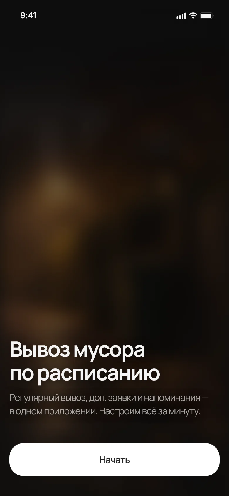
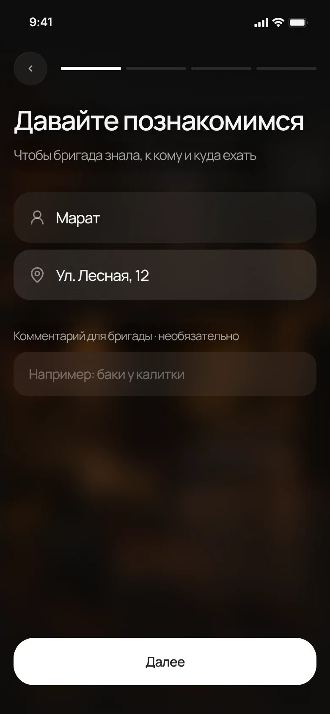
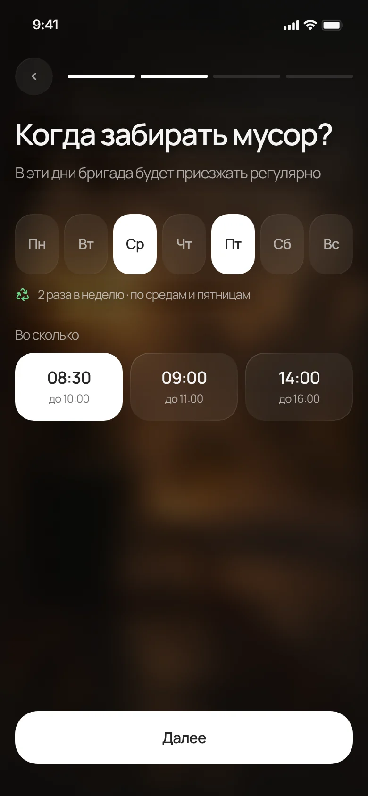
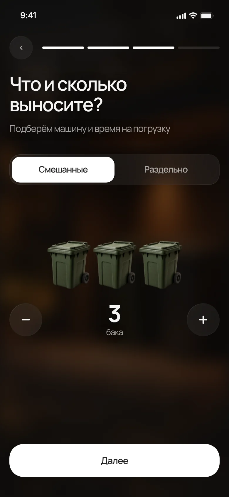
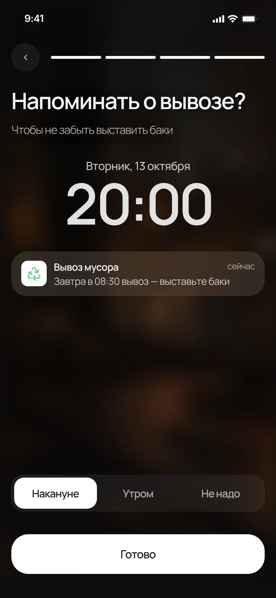
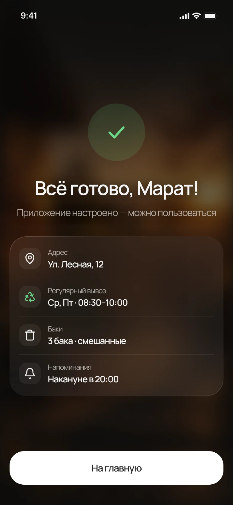
Отслеживание вывоза
В день вывоза на главной появляется карточка «Сегодня» с временем приезда и статусом. В деталях — этапы, бригада и фото после вывоза.
Когда что-то идёт не так
Ливень, закрытый проезд, баки не выставлены. Если вывоз задерживается или не состоялся, карточка на главной объясняет причину, а статус отмечен цветом.
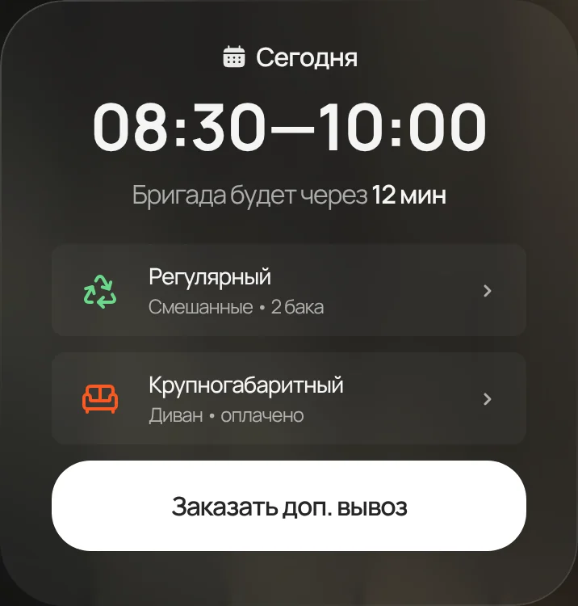
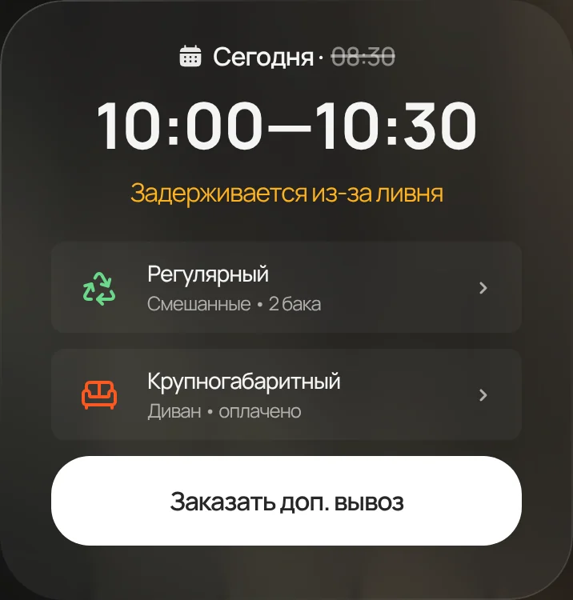
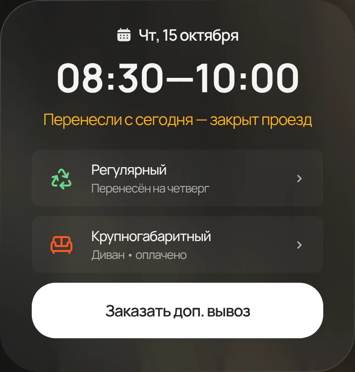
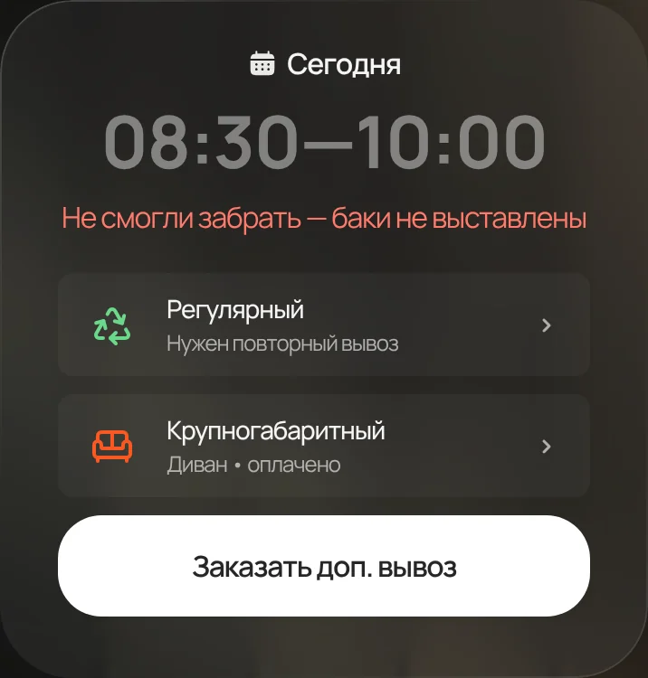
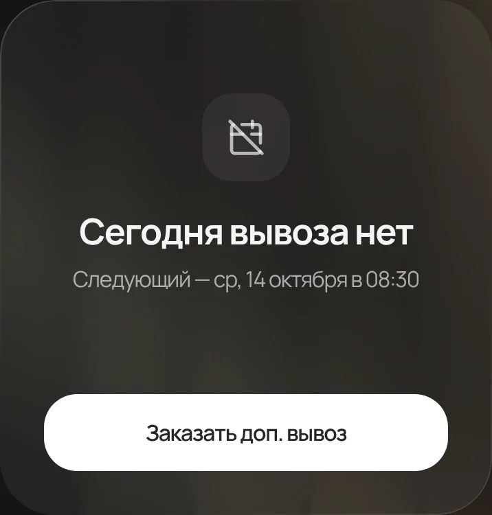
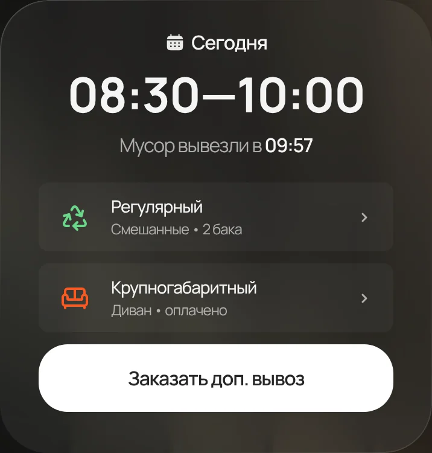
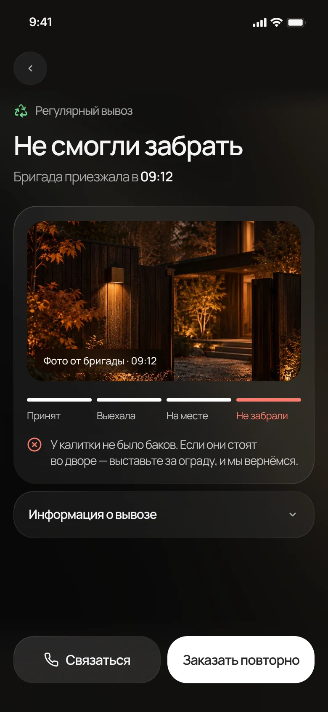
Доп. вывоз
Выбираешь, что вывезти, день и время. Дни регулярного вывоза отмечены, чтобы бригада забрала всё за один приезд.
Календарь
Все вывозы на месяц. Регулярный вывоз можно пропустить одним тапом, тогда он пропадёт и с главной.
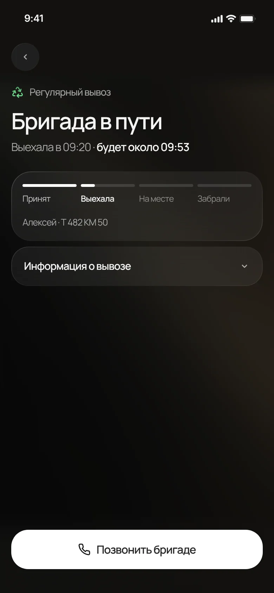
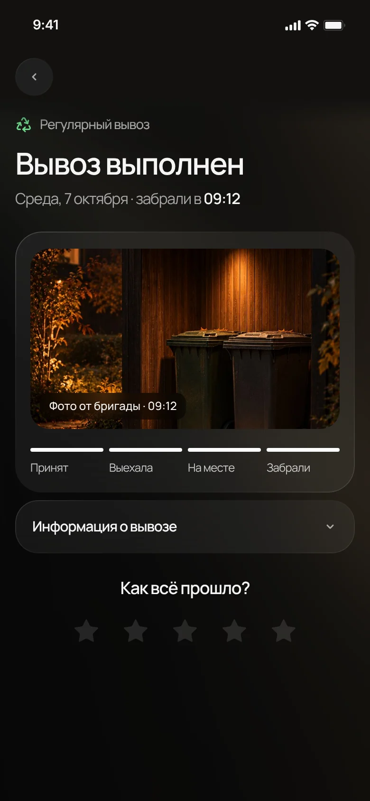
Помощник
Спрашиваешь, куда деть вещь, и получаешь ответ: в какой бак или пункт и как подготовить. Если нужен отдельный вывоз, в чате есть кнопка заказа.
Что принимаем
Справочник с правилами, спец. вывоз с ценами и сезонный баннер, который ведёт сразу в заказ вывоза листьев.
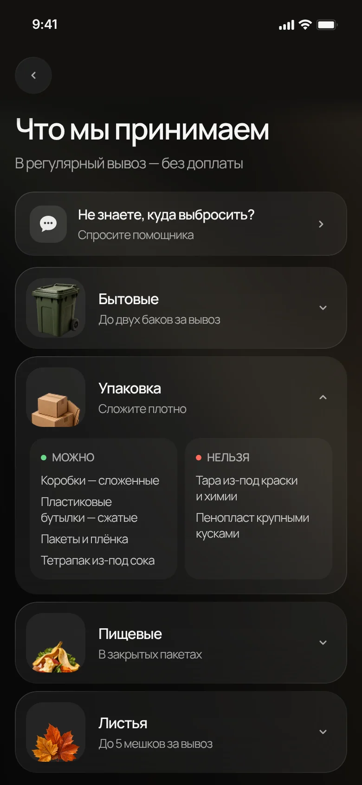
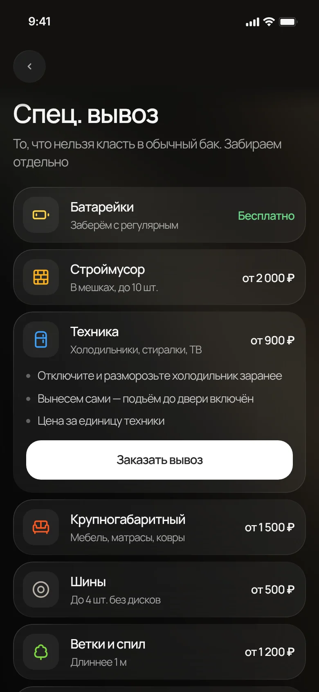
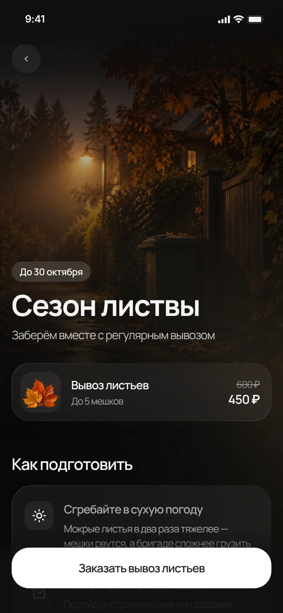
Результат
В основе приложения регулярный вывоз: доп. заявки, напоминания и помощник привязаны ко дню, когда бригада и так приедет. Состояния карточки закрывают вопросы, с которыми раньше звонили в поддержку.
Следующие шаги
- Юзабилити-тест на 5 владельцах домов. Три задания: понять, можно ли выбросить старый диван; заказать вывоз листьев; разобраться, что делать, если бригада задерживается.
- Данные от регоператора. Подключить реальные маршруты, чтобы время приезда считалось по GPS, а не по графику.